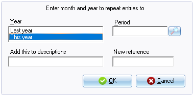
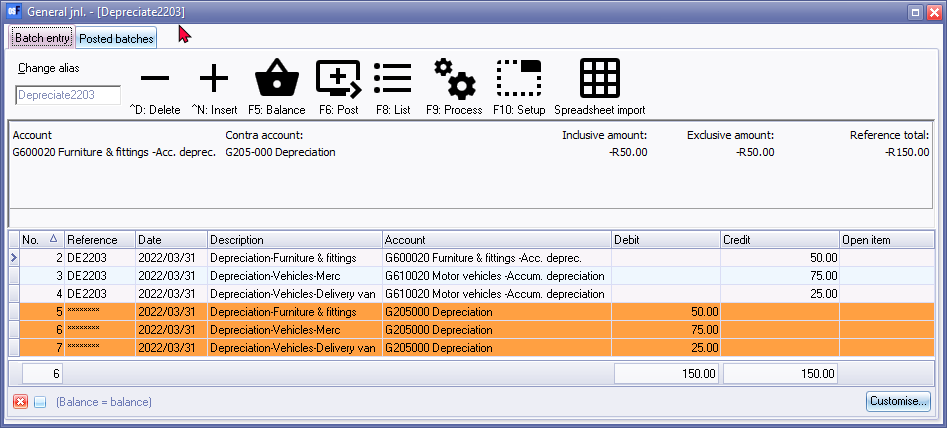
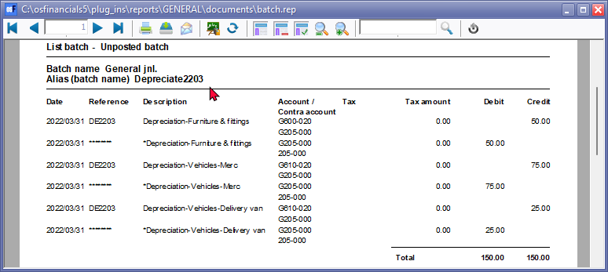

Repeating transactions import
Once transactions is added and or edited, in the Repeating transactions batch entry screen, you may then import the transactions into the normal Batch entry screen using the Repeating transactions option on the F9:Process options.
To post (update) the Repeating transactions batch:
- On the Default ribbon, select Batch entry (F2).
- Select the General Jnl and click on the Open button. The General journal screen will be displayed. Note that there will be no alias displayed on the screen title bar as this is a normal batch.
- Click on the F9:Process icon. The Process the batch screen will be displayed.
- Select the “Repeating transactions” option and click on the OK button. osFinancials will display the following screen on the Batch entry screen:

|
|
If you enter a reference number into the New Reference number field, the reference numbers will not be incremented. The reference number entered, will apply to all repeating transactions which will be imported or generated into the batch (journal). |

- Enter or select the following:
- Select “This Year” in the Year field.
- Select the period (month, i.e. “March 2022”) in which to repeat or copy the transactions.
- Enter "2203" in the “Add this to descriptions” field. You may enter your own, if necessary. This will add it after the description entered in the Repeating Batch which was imported.
- Enter "DE2203" in the “New Reference” field. This will replace the Reference entered in the Repeating batch which was imported.
|
|
The Reference "DE2203", as in this example, indicates that it is Depreciation for March 2023. |

- Click on the OK button. All the transactions you have entered in the repeating Batch entry for the General journal will be imported (copied) into the normal batch.
- Enter the Alias (batch name) in the Change alias field on the Topbar of the Batch entry screen. In this example we enter ''Depreciate2203'' to indicate that the Depreciation transactions for March 2023 was entered in this General journal batch.
|
|
The alias option allows you to identify a batch by a unique name. You will be able to select the batch by alias or batch name if you need to reverse the posted batch or import a posted batch. |

- The imported repeating batch, as in this example, should reflect as follows:

- The first line should be imported will be blank, consisting only of the reference number and date. Click on the ^D: Delete icon to delete this row.
|
|
Always check that the amounts are the same before posting this batch. For instance if you have sold your Mercedes-Benz, you may need to delete the entry for the next months. If you have purchased new assets you may change the amount or add a new entry. You may do it on this screen, but it is recommended that you edit your repeating transactions in Edit → Repeating transactions (Default ribbon) to avoid having to change the same issues every time you wish to update a repeating batch. |
- If the batch is not balanced or in balance, you need to click on the F5:Balance icon to balance the batch.
- Click on the F8:List icon to print a list of the transactions in the batch.

|
|
It is recommended that the source documents (e.g. working papers, calculations, etc.) be attached to this List of the transactions and that it be retained for record and audit purposes. |
- Once you are satisfied that all the entries are correct, click on the F6:Post icon to post (update) the batch to the ledger. osFinancials will update and post the transactions to the ledger accounts.